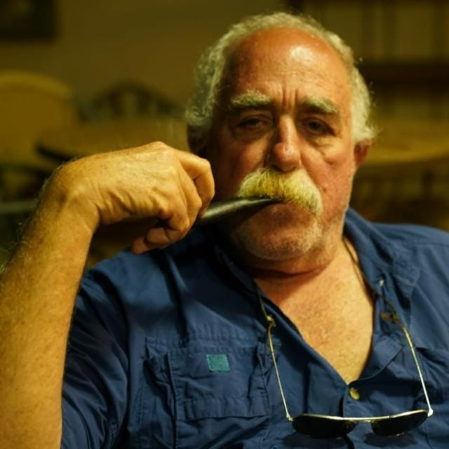

זיכרון כחומר יצירה
העבר אינו רק רקע — הוא חומר בידיים. רסיפה של הילדות ותל אביב של ההווה נמסים יחד לשכבות צבע וצורה.
ציור פיגורטיבי
Efraim Rushansky
אור של תל אביב, צבעים של רסיפה — ציור שחי בין זיכרון לזהות
אודות האמן

אפרים רושנסקי נולד ברסיפה (Recife), בירת מדינת פרנמבוקו שבברזיל, ועשה עלייה לישראל סביב גיל שמונה־עשרה. מאז הוא חי ויוצר בארץ, ומצייר בסגנון פיגורטיבי שמחבר בין נופים פנימיים לבין אור ים־תיכוני.
מעבר לציור, רושנסקי עוסק גם בכתיבה ובהדרכת טיולים — בין השאר בתחומי ארכאולוגיה והיסטוריה מקראית. העניין הזה בסיפור, במקום ובזמן מחלחל גם אל הבד: הדמויות, הפנים והנופים העירוניים שלו מספרים על זיכרון כפול — ילדות ברזילאית ואור ישראלי.
בעבודותיו חוזרים מוטיבים של דמויות יושבות, חדרי פנים עם רצפות משבצות, ונופים עירוניים גיאומטריים בגווני אוכרה, טרקוטה וכחול עמוק — שפה חזותית חמה ומזוהה.
על הסגנון והערכים
הציור של רושנסקי הוא פיגורטיבי בליבו, עם הדים של אקספרסיוניזם ושל אמנות נאיבית־עממית: צורות מפושטות, מברשת חמה ונראית, ופרופורציות שמעדיפות נוכחות רגשית על פני דיוק צילומי. הדמות האנושית — לעיתים קרובות אישה יושבת — מופיעה שוב ושוב כציר של שקט והתבוננות.
לצד הדמויות מופיעים חללי פנים עם רצפות משבצות, כיסאות אדומים וחלונות שנפתחים לנוף; ובמקביל — נופים עירוניים גיאומטריים, קשתות וכיפות בגווני אדמה, שמזכירים אור ים־תיכוני וזיכרון של עיר. הפלטה חוזרת על עצמה: אוכרה, טרקוטה, כחול עמוק, ירוקים וצהובים רוויים.
בין ברזיל לישראל נמתח גשר של צבע: אור תל אביב פוגש את צבעי רסיפה של הילדות. הזיכרון הופך לחומר יצירה — לא נוסטלגיה סנטימנטלית, אלא שורשים וזהות כפולה שממשיכים לדבר על הבד.
העבר אינו רק רקע — הוא חומר בידיים. רסיפה של הילדות ותל אביב של ההווה נמסים יחד לשכבות צבע וצורה.
ברזיל וישראל אינן שתי תיבות נפרדות, אלא דיאלוג חי: אור, קצב וחום שעוברים מתרבות לתרבות.
הפלטה החמה — אוכרה, טרקוטה, כחול וירוק — בונה אווירה ים־תיכונית וברזילאית גם יחד, בלי לוותר על בהירות.
הדמות היושבת, המבט השקט, הידיים בחיק — הציור מספר סיפור של אדם בחלל, לא רק של צורה יפה.
להיות יליד רסיפה ויוצר בישראל משמעו לשאת שני בתים בפנים. הזהות הכפולה היא מקור, לא סתירה.
הפיגורטיביות כאן אינה תיעוד — היא נרטיב. כל בד מזמין להתעכב, לזהות מוטיב, ולהרגיש את הזמן שעובר בחלל.
גלריה
כיתובים תיאוריים לפי מה שנראה בציור — לא כותרות רשמיות.
לחיצה על תמונה פותחת תצוגה מוגדלת. ניתן לנווט במקלדת (חיצים / Escape).
תערוכות
Luzes de Tel Aviv / Luzes de Israel, Cores do Recife
תערוכה פומבית בגלריה Terra Brasilis שברסיפה, המציגה כ־27 עבודות חדשות יחסית. העבודות בונות גשר בין אור תל אביב לבין זיכרון רסיפה — בין המקום שבו האמן חי ויוצר לבין העיר שבה נולד.
אוצר: ז׳אק ריבמבוים (Jacques Ribemboim). המידע מבוסס על סיקור פומבי של התערוכה.
יצירת קשר
דף זה הוא טיוטת פורטפוליו. פרטי קשר, אימייל וטלפון יתווספו כאן בהמשך — לפי בחירת האמן והמשפחה.